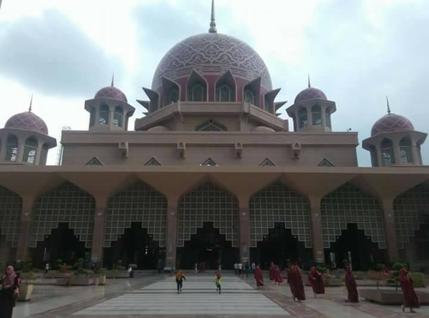

我對於不同的文化感到好奇，因此我很喜歡旅行，想要趁我還年輕的時候，到世界各地走走，拓展我的視野，體驗不同的文化。我曾經去過韓國、新加坡、馬來西亞、日本，每個國家都有值得我們學習的地方。
走在不同國家的街道上，都會有不同的感受。出國旅遊時，我最喜歡的事情是逛超市或是傳統市場，我認為這是體驗道地文化最好的方式，每個地方的超市都有它獨特的地方。
迪士尼樂園，是我從小時候就最想去的地方。而在我十八歲這一年，終於有機會去到迪士尼樂園了，那個屬於大人與小孩的夢幻樂園。

日本富士山
韓國南山首爾塔

馬來西亞粉紅清真寺

新加坡魚尾獅公園